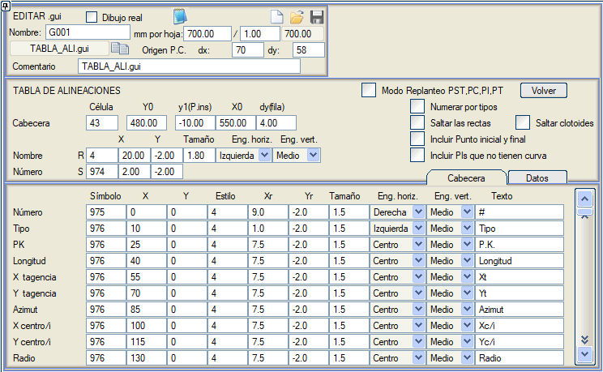
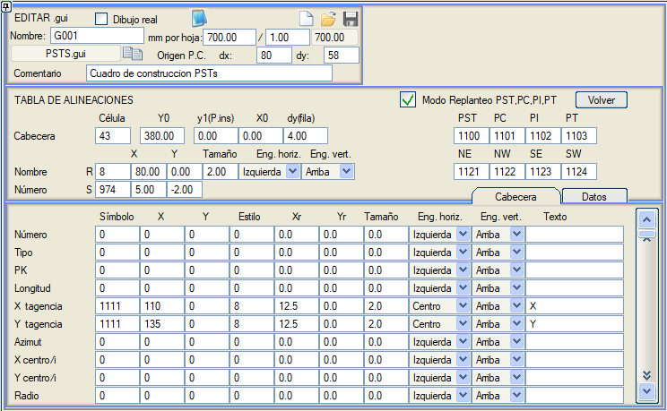

| |
|
BOYKESİT PAFTALARI İÇİN ŞABLONLAR: GÜZERGAH ELEMANLARI TABLOLARI
|
Her paftaya, .ali düzenleyicisindekine benzer, ancak o paftada görünen güzergah elemanlarını içeren bir Güzergah Elemanları Tablosu ekleme imkanı. Plandaki güzergah elemanlarının bir veri tablosunu (Başlık sekmesi) tanımlayabiliriz, örneğin: Güzergah elemanı numarası, Tip, KM, Uzunluk, X teğet, Y teğet, Azimut, X merkez/i, Y merkez/i, Yarıçap, Parametre, Kurbun yönü (sağ/sol), Dairesel kurbun tanjant boyu, Klotoidlerin uzun ve kısa tanjantları, Kurbun dış mesafesi, Kurbun PI some noktası KM'si, Her güzergah elemanının (aliyman, daire veya klotoid) bitiş KM'si, Kurbun PI some noktası X,Y koordinatları, Xc klotoid, Yc klotoid, p klotoid, k klotoid, Kurbun deveri, Kurbun genişletmesi, Sapma açısı (klotoidler ve daireler). Tipe göre numaralandır kutucuğunu etkinleştirerek, tipe göre (aliyman, daire, klotoid) bağımsız numaralandırmalı bir tablo oluşturabiliriz. Aliymanları atla seçeneğini etkinleştirerek, program tabloda aliyman olan güzergah elemanlarını oluşturmaz. Başlangıç ve bitiş noktasını dahil et: Bu durumda sadece km,x,y,azimut etiketlenir. 
ISPOL kütüphanesinde örnek olarak TABLA_ALI.gui bilgi bandı mevcuttur. PST,PC.PI.PT Aplikasyon Modu kutucuğu etkinleştirildiğinde, özel bir moda erişim sağlanır:  Bu mod, her güzergahtan kurpların some noktalarını (PI), kurpların başlangıç ve bitiş noktalarını (PC, PT) ve aliymanlar üzerinde bulunan 500m'nin katlarındaki bir noktayı (PST) çıkarır. Bu modda aşağıdaki parametreler tanımlanabilir:
|